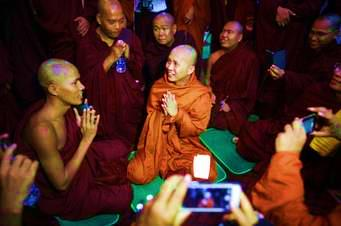

It is said that Buddha once in his life came to this region East Bengal to spread Buddhism and he was successful to convert the local people of East Bengal to Buddhism is now the third largest religion in Bangladesh with about 2% of population adhering to Theravada Buddhism.] Over 65% of the Buddhist population is concentrated in the Chittagong Hill Tracts region, where Buddhism the predominant faith of the Chakma, Marma, Tanchangya, other Jumma people and the Barua, while the remaining 35% of the population are from the Bengali Buddhist community. Buddhist communities are present in the urban centres of Bangladesh, particularly Chittagong and Dhaka. Like all the other religions this religion has also some festivals. They celebrate their festivals very cheerfully. Their main festivals are:
1.Buddha Purnima
2.Magha Puja Day.
3.Sangha Day
4.Wesak
5.Parinirvana Day
6. Kathina
